Volunteer Emergency Response Alliance
Final Project Submission Report
VERA — Volunteer Emergency Response Alliance | CSE309 Section 06
VERA (Volunteer Emergency Response Alliance) is a full-stack web platform that centralizes emergency assistance and resource coordination in Bangladesh. It connects citizens in need with volunteers, blood donors, NGOs, hospitals, and administrators through one role-based system.
The MVP is built with a React (Next.js) frontend and a FastAPI (Python) backend, using JWT authentication and a REST API. Core workflows include emergency requests, blood donor matching, shelters, incident reporting, donations and campaigns, volunteer opportunities, disaster coverage maps, notifications, and an in-app Gemini-powered assistant (VERA Bot) that can query live platform data. The production stack is deployed as Vercel (frontend) + Railway (API) + Supabase PostgreSQL (database).
Bangladesh faces frequent medical emergencies and natural disasters. Today, people often seek help through Facebook groups, WhatsApp chats, and informal networks. These channels are slow, unverified, and hard to coordinate—especially when many organizations respond independently.
VERA replaces that fragmentation with a shared digital platform: submit requests, match donors, track shelters and coverage, manage volunteers, and keep donation records transparent.
| Problem | Impact |
|---|---|
| Slow emergency response via social media | Help arrives late when minutes matter |
| No central coordination among responders | Duplicate aid in some areas, gaps in others |
| Hard to find matching blood donors | Patients miss compatible donors |
| Opaque donations | Lower trust and repeat giving |
| No always-ready volunteer network | Teams assemble too late after disasters |
| Student ID | Name | Role / Contribution |
|---|---|---|
| 2311960 | Md. Mahmudul Hasan | Full-stack development, documentation, demo |
| 2310604 | Ridwan Hasan Khandakar | Full-stack development, documentation, demo |
| ID | Requirement | Priority |
|---|---|---|
| FR-01–03 | Register, JWT login, role-based access | P0 |
| FR-06–07 | Emergency request submit & verify | P0 |
| FR-08–09 | Blood request & donor notify/search | P0 |
| FR-10–13 | Resources, coordination, donations, campaigns | P1 |
| FR-14–16 | Notifications, shelters, incidents | P0/P1 |
| FR-17–18 | Volunteer opportunities & certificates | P1/P2 |
| FR-19+ | Coverage monitoring, nearby search, admin reports | P1 |
VERA uses a three-tier client–server design:
| Tier | Technology | Responsibility |
|---|---|---|
| Presentation | Next.js 16, React 19, Tailwind CSS 4, Leaflet | UI, routing, maps (Vercel) |
| Application | FastAPI, Uvicorn, Pydantic, SQLAlchemy | Business logic, JWT auth, validation (Railway) |
| Data | SQLite (local) / Supabase PostgreSQL (prod) | Persistence (Alembic migrations) |
| AI | Google Gemini (gemini-flash-lite-latest) | VERA Bot chat + DB tool calling |
Communication is JSON over HTTP REST. Protected endpoints require
Authorization: Bearer <JWT>. Auth remains VERA JWT (not Supabase Auth);
Supabase is used as the hosted Postgres database only.
Browser → Vercel (Next.js)
│ NEXT_PUBLIC_API_URL
▼
Railway (FastAPI)
│ DATABASE_URL (pooler + sslmode=require)
▼
Supabase (PostgreSQL)
Course requirement note: Backend is FastAPI (Python). Frontend is React via the Next.js App Router.
| Feature | Status |
|---|---|
| User registration & JWT auth | Completed |
| Role-based access control | Completed |
| Volunteer verification (NID/Passport) | Completed |
| Become a donor | Completed |
| Emergency request submission & verification | Completed |
| Blood requests, donor search & notifications | Completed |
| NGO resource tracking & coordination | Completed |
| Donations & fundraising campaigns | Completed |
| Shelters & incident reporting | Completed |
| Volunteer opportunities, applications, certificates | Completed |
| Disaster coverage monitoring (map) | Completed |
| Location-based nearby search | Completed |
| Admin operational reports / dashboard stats | Completed |
| VERA Bot (Gemini) global chat assistant | Completed |
Screenshots below were captured from the running MVP (localhost:3000) on 11 August 2026.
The same features are available on the live demo:
https://vera-frontend-indol.vercel.app
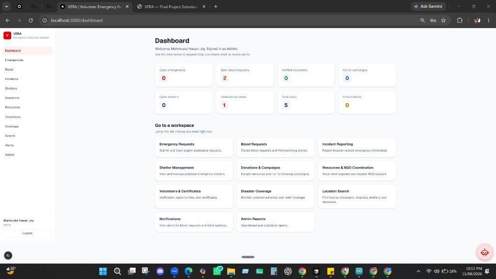
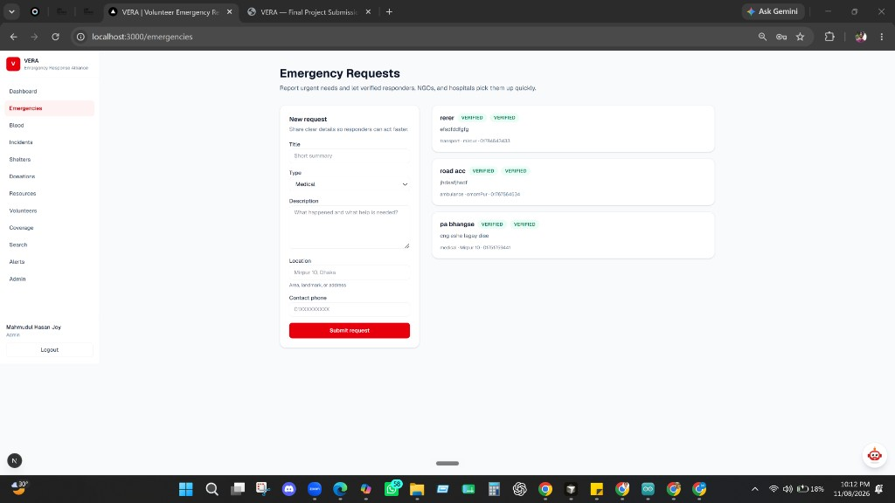
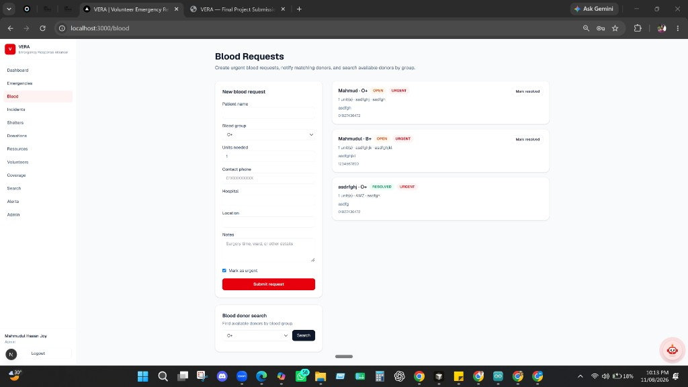
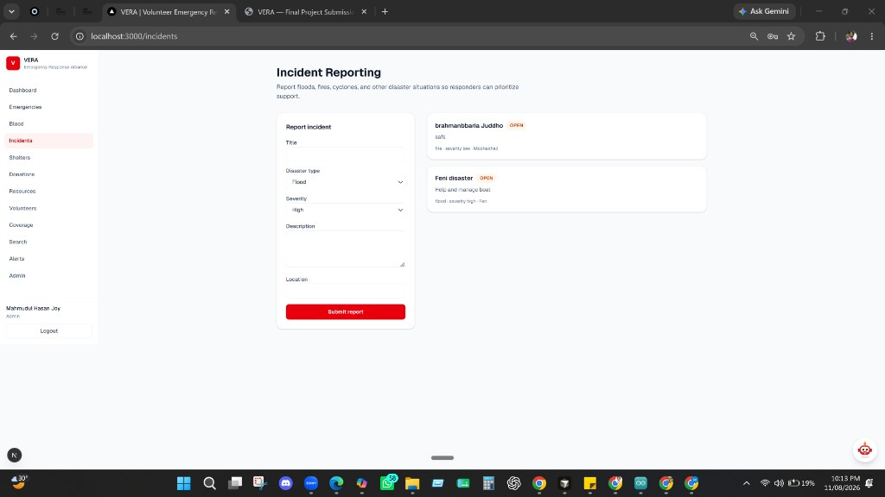
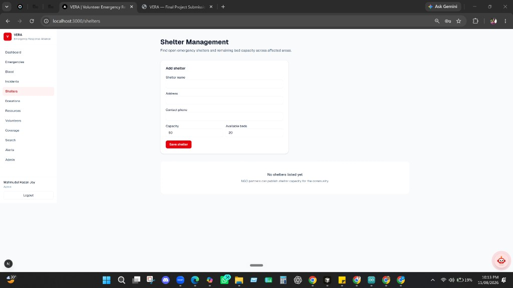
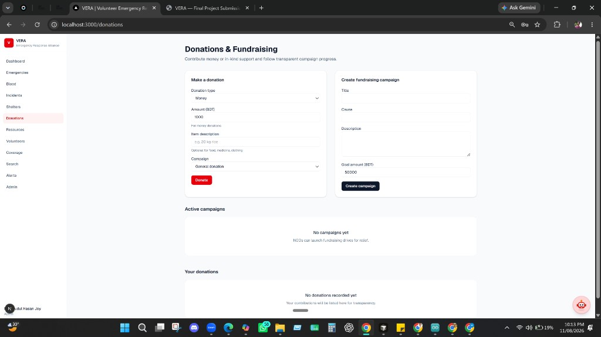
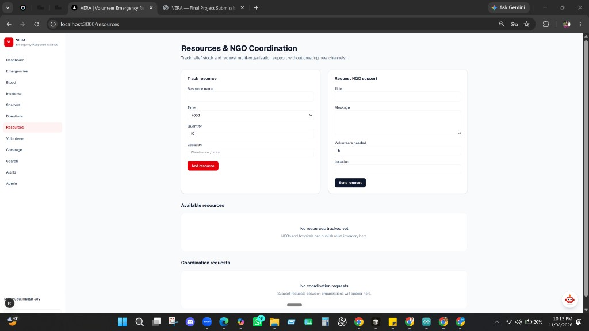
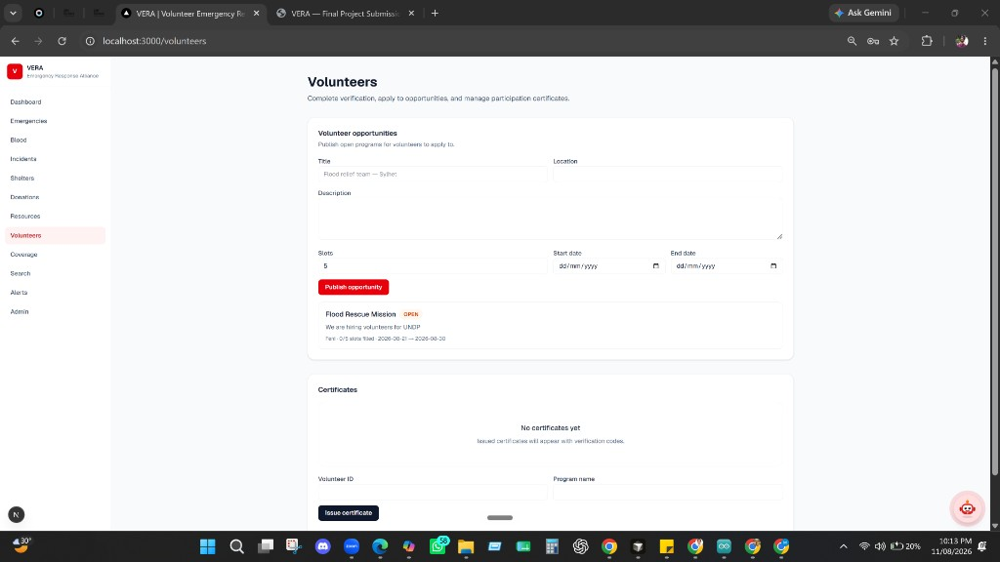
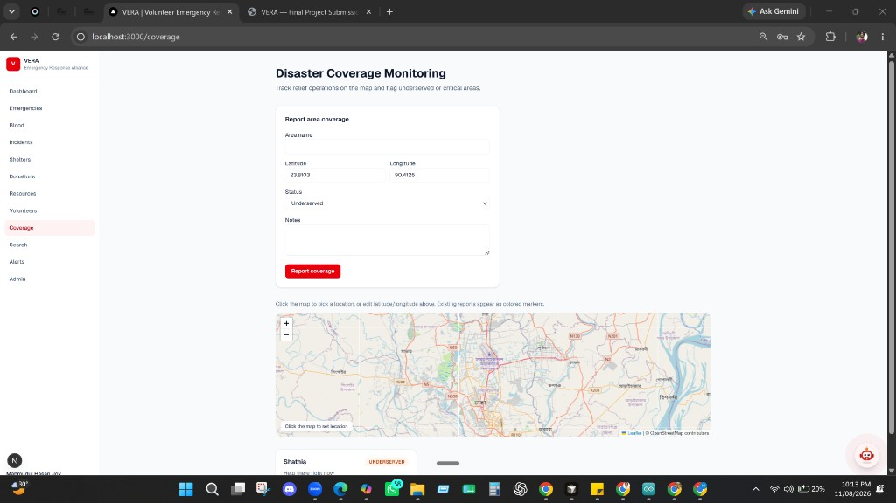
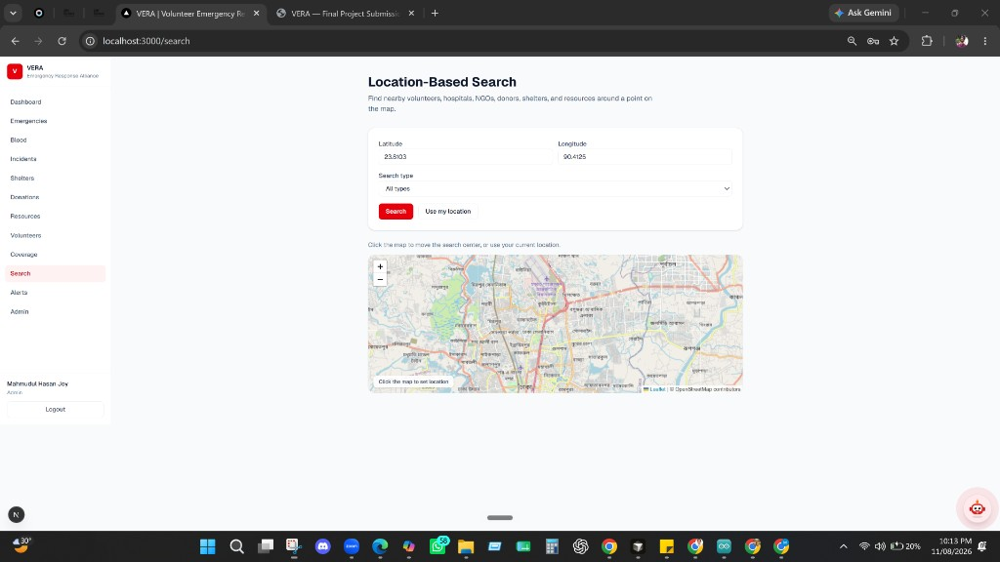
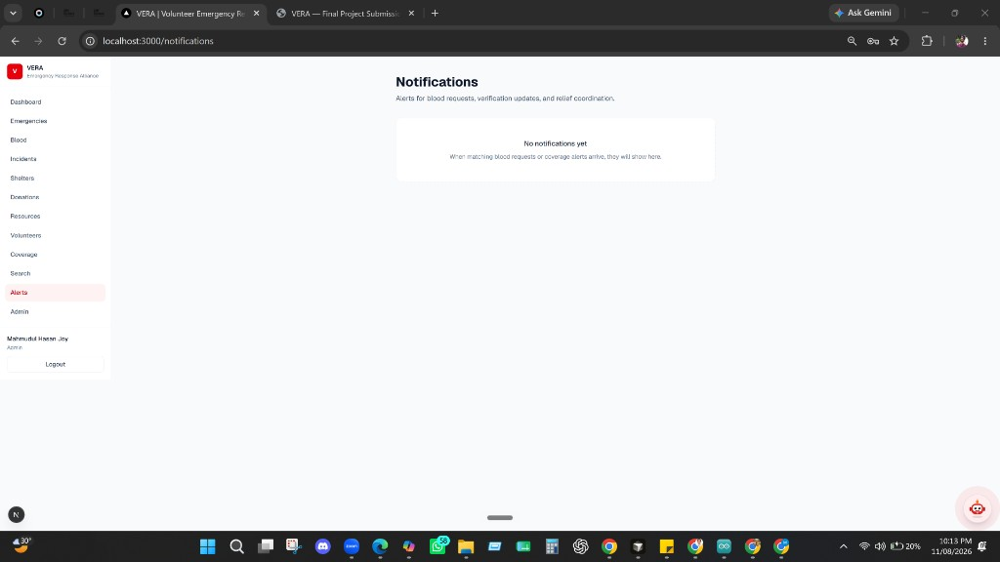
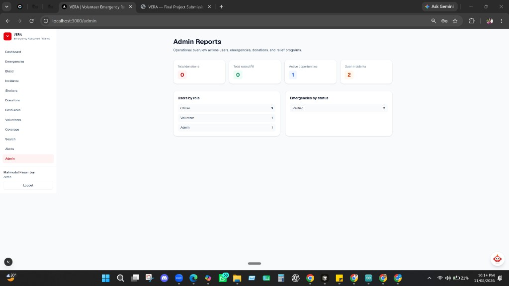
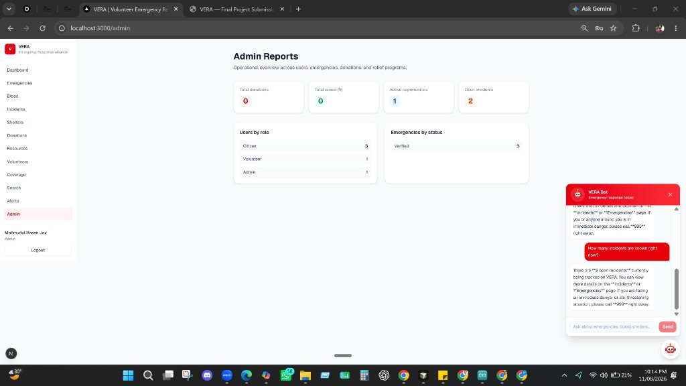
VERA Bot is a floating assistant available across the website. It uses the Google Gemini API
through a FastAPI endpoint (/api/v1/assistant/chat and streaming
/chat/stream).
Interactive docs (local): http://localhost:8000/docs
Interactive docs (live): https://vera-production-117c.up.railway.app/docs
Health: https://vera-production-117c.up.railway.app/health
| Area | Example endpoints |
|---|---|
| Auth | /api/v1/auth/register, /login, /me |
| Emergencies | /api/v1/emergencies |
| Blood | /api/v1/blood/requests, /donors |
| Features | resources, donations, shelters, incidents, opportunities, coverage… |
| Search / Stats | /api/v1/search/nearby, /stats/dashboard |
| Assistant | /api/v1/assistant/chat, /chat/stream |
docs/REGRESSION_PASS.md, docs/PERFORMANCE_SMOKE.md,
docs/SECURITY_REVIEW.mdRun tests:
cd backend python -m pip install -r requirements.txt python -m pytest -q
| Component | Host | URL |
|---|---|---|
| Website | Vercel | https://vera-frontend-indol.vercel.app |
| API | Railway | https://vera-production-117c.up.railway.app |
| Database | Supabase (Postgres) | Project mwsqekmbqrblaglffclb (ap-southeast-2) |
Frontend env: NEXT_PUBLIC_API_URL points at the Railway API.
Backend env: DATABASE_URL (Supabase pooler + sslmode=require),
SECRET_KEY, CORS_ORIGINS, GEMINI_API_KEY,
GEMINI_MODEL=gemini-flash-lite-latest.
Railway builds from the repo-root Dockerfile / railway.toml.
npm run setup npm run dev # App: http://localhost:3000 # API docs: http://localhost:8000/docs
For VERA Bot, set GEMINI_API_KEY in backend/.env
(model default: gemini-flash-lite-latest).
docker compose up --build for local containersdocs/deployment/VERCEL_SUPABASE.mddocs/deployment/OCI.md with Nginx + PostgresVERA delivers a working emergency-response MVP that meets the course stack requirement (FastAPI + React) and demonstrates end-to-end features from authentication through coordination workflows, maps, and an AI assistant grounded in live data. The production deployment on Vercel, Railway, and Supabase shows the system running beyond localhost. The project shows how a centralized platform can improve speed, coordination, and transparency for emergency assistance in Bangladesh.
docs/business-analysis/01-project-overview.mddocs/business-analysis/02-problem-statement.mddocs/prd/08-prd.mddocs/srs/17-srs.mddocs/tdd/20-tdd.mddocs/tdd/22-api-design.mddocs/deployment/VERCEL_SUPABASE.mddocs/deployment/OCI.md